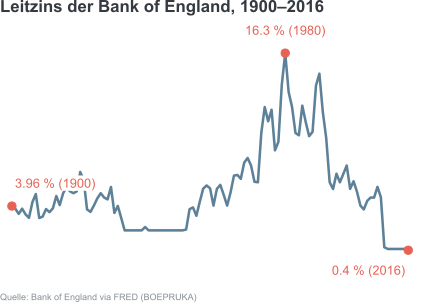
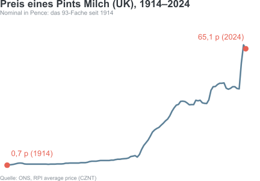
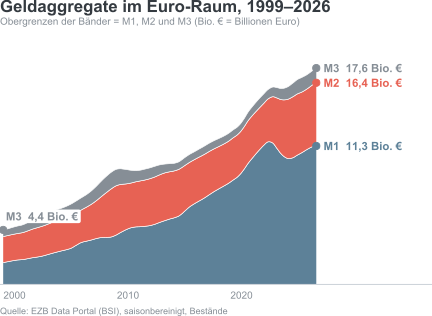

Geld und Geldpolitik
Syllabus
| Topic | Theory | Visualization |
|---|---|---|
| What is money | • Functions of money • Monetary aggregates • Money demand (Cecchetti and Schoenholz 2021, Part I) |
Classification: Transferrable vs term deposits as split between transaction balances M1 and holdings M2/M3. |
| Interest rates and present value | • Nominal and real rates • Fisher equation • How many interest rates are “the interest rate” (Cecchetti and Schoenholz 2021, Part II) |
Effective, nominal and real (CPI adjusted) deposit rates. Distribution of rates (heatmap, density plots, ridgelines). Stock rotation (maturity wall): bar charts of loans by remaining fixation period. |
| Banks as intermediaries and transmission mechanism | • Maturity transformation • Net interest margin • Propagation of policy rate to lending rate to spending chain (Cecchetti and Schoenholz 2021, Part III) |
Debt by sector (bump chart, mosaic chart) Rate pass-through (policy rate to service cost) Scatter of new volume and new rates (to businesses) reveals hysteresis. Connect sector, loan purpose, maturity class and rate fixation in Sankey diagram. |
| Financialization and debt | • Income-financed and debt-financed consumption (and wealth) Avritzer and Brochier (2025) |
Loan structure of private households. Loan purposes, loan-size class. Composition of private debt (streamgraph) |
| Debt and rate cycles | • Debt-service ratios • Variable and fixed rate borrowers over the cycle • Financial instability hypothesis Minsky (1992) |
Rate-fixation period as measure of interest rate exposure. Composition of debtors hit first by rate hikes. Maturity of new loans (streamgraph). |
| International debt | • Dominant currency paradigm (world money) • Spillovers from core to periphery • Exorbitant privilege • Global financial cycle Lapavitsas (2026) |
Domestic, EU and cross-border loans (Ridgeline) Average bank rates (Jitter plot) |
Literatur

Bestandteile des Finanzsystems
Überblick
Überblick
Geld
Finanzinstrumente
Im Englischen werden financial instruments auch securities genannt, weil der zugrundeliegende Vertrag eine Rückzahlung oder künftige Zahlung absichern soll.
- Kredite
- Anleihen
- Aktien
- Aktienfonds (mutual funds)
- Versicherungen
- Termingeschäfte (contract for difference)
Finanzmärkte
- Kaffeehäuser, Beisln, Handelsposten
- Börsen
- Elektronische Plattformen und Apps

Finanzinstitutionen
- Banken als Tresorräume mit Auszahlungsraum
- Einlagen und Kredite
- Händler:innen für Finanzinstrumente
- Trennung von Geschäfts- und Privatbanken
Regulierungsbehörden
- Wucherverbot
- Banklizenzen
- Hausbanken
- Bankenaufsicht nach Finanzkrisen
- Überwachen und Strafen
- Glass-Steagle Act
- Dodd-Frank Act
- Basel III
Zentralbanken
- Münzprägeanstalten
- Schatzkammer/Finanzverwaltung (William of Orange)
- Geld- und Kreditangebot, Staatsanleihen
Fragen (Cecchetti und Schoenholtz)
- Was unterscheidet eine Bankomatkarte von einer Kreditkarte?
- Sind Ihre Bankeinlagen versichert?
- Würden Sie lieber Aktien, Anleihen oder Gold besitzen?
- Würden Sie Aktien der Firma kaufen, für die Sie arbeiten?
- Welche Informationen wollen Sie haben, bevor Sie eine Hypothek aufnehmen?
- Was ist Ihre Kreditwürdigkeit, und warum ist die wichtig?
- Brauchen Sie eine Lebensversicherung?
- Brauchen Sie eine Krankenversicherung?
- Brauchen Sie eine Sozialversicherung?
- Brauchen Sie eine Pensionsversicherung?
Geld
Recheneinheit
- Rechneinheit und Verrechnungseinheit:
- Güter und Dienstleistungen sind vergleichbar (kommensurabel)
- Geschäfte werden gegengerechnet und nur die Differenz ausbezahlt
- Ausgaben und Einnahmen passieren nicht gleichzeitig, werden aber in Beziehung gesetzt
- Relative Preise: Alle Güter und Dienstleistungen werden miteinander verglichen.
Wertspeicher
- Zahlungsmittel sind gegen schnellen Verfall geschützt
- Käsesteuern, Salzsteuern, Edelmetalle
- Liquider Wertspeicher: Geld kann sehr schnell und günstig gegen Güter und Dienstleistungen getauscht werden.
- Gold weniger schnell, Anleihen noch langsamer, Immobilien ganz langsam.
- Finanzinstitutionen unterscheiden zwischen Marktliquidität (market liquidity) und Finanzierungsliquidität (funding liquidity).
Warengeld
- Frühe Zahlungsmittel hatten einen intrinsischen Wert: Seide, Butter, Salz, Tierzähne.
- Sie hatten auch darüber hinausgehende nützliche Eigenschaften:
- Haltbarkeit
- Teilbarkeit
- Transportierbarkeit
- Standardisierbarkeit.
- Gold zieht sich durch die Geschichte der Zahlungsmittel:
- Selten (Hohes Wert-zu-Gewicht Verhältnis)
- Weithin bekannt und verbreitet
- Reinheitsgrad bestimmbar
- Standardisierbar und verlustfrei teilbar
- Haltbar
Papiergeld
- Im 17. Jahrhundert: Papiergeld entwickelt in Schweden als Alternative zu Kupfergeld (nicht sehr wertvoll)
- Direkt eintauschbar für Metallgeld
- Mehr Banknoten als verfügbares Metall, baldiger Vertrauensverlust
- Ab beginnendem 18. Jahrhundert: Papiergeld in den amerikanischen Kolonien und Frankreich.

Papiergeld
- Im amerikanischen Bürger:innenkrieg finanzieren beide Seiten Personal und Dienstleistungen mit Papiergeld, gedeckt von einem staatlichen Versprechen.
- Papiergeld der Sieger:innenseite ist anerkanntes Zahlungsmittel (greenback), Banknoten der Velierer:innenseite nur noch für Sammler:innen interessant.
Fiatgeld
- Modernes Papiergeld hat wenig intrinsischen Wert und niedrige Produktionskosten.
- Annahme durch staatliche Stellen und private Geschäftstreibende ist rechtlich vorgegeben.
- Gedecktes Papiergeld: Edelmetall im selben Wert vorhanden, verlangsamt Entwertung.
- Ungedecktes Papiergeld (echtes Fiatgeld): Eintauschbarkeit abhängig von Marktbedingungen
Fiatgeld
- Genau wie Waren- und Metallgeld an allgemeine Akzeptanz gebunden.
- Geldmenge zentral gesteuert und einfach auszuweiten (Entwertungsangst).
- Ziel von Fiatgeld: Stärkere Preisentwicklung als Warengeld, setzt Mengenentwicklung unter realem Wachstum voraus.
Elektronische Zahlungsmittel
- Debitkarte:
- Zahlungsanweisung an Bank.
- Zahlung durch Karteninhaber:in.
- Gebührenfinanziert.
- Kreditkarte:
- Vorstrecken durch Bank.
- Zahlung durch Bank.
- Zinsfinanziert.
- Direktüberweisung:
- Elektronische Zahlungsanweisung
- Transaktionen über Clearingstelle (automatic clearing houses ACH)
- Zwischen Finanzinstitutionen: Tatsächliche Transaktion nur über Differenz.
- Mittlerweile häufig an Handyverträge gebunden (Handyparken in Wien, M-Pesa in Kenia)
Inflation
- Inflation bedeutet, dass Güter und Dienstleistungen allgemein teurer werden.
- Inflation bedeutet, dass Geld weniger wert ist.
- Geld ist weniger wert, wenn mehr Geld zirkuliert als Waren und Dienstleistungen zirkulieren.

Inflation
- Es zirkuliert mehr Geld als Waren, wenn die Geldmenge plötzlich ausgeweitet wird.
- Es zirkulieren weniger Waren als Geld, wenn mehr gespart und weniger investiert (oder konsumiert) wird.
- Inflation wird real spürbar wenn Preise tatsächlich erhöht (von Firmen) und höhere Preise tatsächlich bezahlt werden (von Haushalten und Firmen)
Geld zählen
Zahlungsmittel können nach Liquidität gereiht werden:
- Bargeld
- Taggeldkonten
- Festgeldkonten
- Staatsanleihen
- Aktien
Geldaggregate
- M1: Bargeld und Einlagenkonten (fast unverzinst)
- M2: M1 + Festgeldkonten unter USD 100.000, Sparkonten, Anlagenfonds, … (verzinst)
- M3 + Einlagen über USD 100.000
- M4 (Britisch): Bargeld in Verwendung, Bankeinlagen, Bauspareinlagen, Einlagenzertifikate.

Geld drucken
- Physische Geldproduktion durch Notenbanken, mit Seignorage-Gewinn (Differenz zwischen Produktionskosten und Nennwert)
- Kreditschöpfung durch Geschäftsbanken und Kreditinstitute
- Jedes Aktivum wird durch ein Passivum gespiegelt.
Fragen (Cecchetti und Schoenholtz)
- Wie können Sie für einen Kaffee bezahlen?
- Welche Zahlungsart ist am günstigsten für die Empfängerin?
- Was hat Geld mit Arbeitsspezialisierung zu tun?
- Was wäre eine angemessene Rechnungs- und Verrechnungseinheit einer bargeldlosen Ökonomie?
- Was für Beispiele von Direktüberweisungen kennen Sie?
- Was sind die Vor- und Nachteile als EU-Land dem Euroraum beizutreten?
- Warum sind Tomaten, Ziegelsteine und Rinder keine guten Geldwaren?
- Was sind die aktuellen Schätzungen für die Geldaggreagte M1, M2, M3 und M4 in Österreich?
Finanzinstrumente
Geld ausborgen
Direkte Kredite:
- Privatkredit
- Schuldschein
- Geldleiher:innen und Kredithaie
Geld ausborgen
Indirekte Kredite
- Banken vermitteln zwischen Einleger:innen und Kreditnehmer:innen
- Riskentransformation
- Fristentransformation
- Wer sich Geld ausborgt, schafft gleichzeitig Aktiva (wofür das Geld ausgegeben wird) und Passiva (die Schulden)
- Wer Geld herborgt schafft ebenfalls Aktive (die Kreditsumme) und Passiva (wo das Geld dafür herkommt)
Geld ausborgen
- Nicht alle Kredite sind einlagengedeckt: Banken schaffen (schöpfen) Geld, indem sie Kredite vergeben.
- Kredite sind Aktivposten (assets): können gehandelt werden und daher als Eigenkapital (collateral) für weitere Kredite verwendet werden, durch die wieder Geld geschöpft wird.
- Nur ein Bruchteil der Guthaben und Kredite sind als Banknoten im Umlauf. Für den Rest reicht die Verrechnung von Zahlungen gegeneinander (clearing).
Direkte und indirekte Kreditvergabe
- Trend zur Institutionalisierung von Direktkrediten (Unterschied verschwimmt).
- Moderne Unterscheidung: Wer besitzt das Aktivum (den Kredit):
- Direktkredit: Gläubiger:in
- Indirekt: Gläubiger:in besitzt Anspruch gegenüber einer Institution, diese eine gegenüber Kreditnehmer:in.
Finanzinstrumente
- Vertragliche Zahlungs- oder Wertübertragungsverpflichtung
- Zahlungsmittel (Aktienoptionen statt Gehaltserhöhung)
- Wertspeicher
- Risikotransfer
Risikotransfer
- Direkte Kreditvergabe: Entweder vertragsgemäße Erfüllung oder Totalausfall.
- Indirekte Kreditvergabe: Teilweiser Ausfall, bei unabhängigen Kreditrisiken überschaubar.
- Kreditausfallrisiken nicht immer unabhängige Zufallsereignisse (Immobilienkrise 2007)
Informationen in Finanzinstrumenten
- Finanzinstrumente sind komplex, sie zu verstehen kostet Zeit oder Geld (die Zeit von Anwält:innen).
- Entwicklung eines Finanzinstruments bedeutet Standardisierung und Übersetzung.
- Absicherung gegen asymmetrische Information
Einfache und derivative Instrumente
- Einfache Finanzinstrumente: Wert und Zahlungen beziehen sich ausschließlich auf wirtschaftlichen Status der Kreditnehmerin (Zinsen, Dividenden, …).
- Derivative Instrumente: Wert und Zahlungen beziehen sich auf Wertentwicklung anderer Instrumente.
- Derivative Instrumente: Verteilen Risiken unter vielen Investor:innen.
Instrumente bewerten
Ein Finanzinstrument hat einen höheren Preis, wenn eine höhere Zahlung zu einem baldigeren Zeitpunkt und mit höherer Wahrscheinlichkeit geleistet wird.
- Höhe der vereinbarten Zahlungen.
- Zeitpunkt der vereinbarten Zahlungen.
- Umstände der vereinbarten Zahlungen.
Beispiele für Finanzinstrumente
- Bankkredite
- Anleihen (Staaten und Firmen)
- Immobilienhypotheken
- Aktien
- Besicherte Wertpapiere (asset backed securities)
Riskentransformation
- Versicherungsverträge: Auszahlung wenn Ereignis eintritt.
- Termingeschäfte (futures): Geschäft wird in der Zukunft zu zukünftigen Preisen abgeschlossen.
- Optionen: Anrecht, ein Geschäft in der Zukunft zu festgelegtem Preis abzuschließen.
- Swaps: Vertrag, in der Zukunft zwei Zahlungen (oft in unterschiedlichen Währungen) abzuschließen.
Finanzmärkte
- Liquidität
- Informationen sammeln und kommunizieren
- Organisieren Riskenteilung
Transaktionskosten
- Finanzmärkte verteilen Liquidität
- Transaktionskosten fallen an, sollen aber niedrig sein
- Informationen vor allem über Preise
Informative Preise
- Preise werden durch Wettbewerb geformt: Hohe Preise sprechen für geringes Angebot oder hohe Nachfrage.
- Ohne Zusatzinformationen bietet das eine Idee an, welche Finanzinstrumente von ihren Besitzer:innen und anderen Käufer:innen als vielversprechend gesehen werden.
- Große Gruppen irren sich selten, aber wenn, dann sehr (Blasenbildung)
Primäre und sekundäre Märkte
- Primärmarkt: Neue Finanzinstrumente
- Sekundärmarkt: Alle weiteren Besitzer:innenwechsel
Zentralisierte und Freiverkehrsmärkte
- Zentralisierte Märkte: Händler:innen treffen sich an einem physischen Ort.
- Freiverkehr: Dezentralisierte Märkte mit elektronischen Transaktionen
- Elektronische Netzwerke: Plattformen die Verkäufer:innen und Käufer:innen vernetzen (ohne broker und dealer).
Einteilung nach Funktion
- Debt and Equity: Einfache Finanzinstrumente (Kredite und Anteile) werden für Geld verkauft.
- Derivativmärkte: Finanzderivate werden für zukünftigen Zahlungen gehandelt.
- Kredite auf Geldmärkten haben eine Laufzeit von unter einem Jahr, längere Laufzeiten werden auf Anleihenmärkten gehandelt.
Finanzmärkte wie man sie sich vorstellt
- Geringe Transaktionskosten
- Zutreffende und zugängliche Informationen
- Investor:innenschutz gegen Diebstahl, Betrug, Manipulation.
Finanzmärkte wie sie sind
Finanzmärkte sind von Machtungleichgewicht und Machtausübung geprägt.
- Größe und Reputation bestimmen Aktionsradius, daraus entsteht asymmetrische Information.
- Absprachen und gegenseitige Verpflichtungen sind intransparent, daraus entstehen verzerrte Preissignale.
- Investitionen in Überbewertung ist profitabel, daraus entstehen Blasen.
- Handlungsspielraum von kleinen Anleger:innen ist begrenzt, daraus entsteht Übervorteilung.
Finanzinstitutionen
- Kombinieren langfristige Kredite mit täglich fälligen Einlagen – Fristentransformation
- Kombinieren viele Kredite (oder andere Instrumente) mit unterschiedlichem Ausfallrisiko – Riskentransformation.
- Organisieren Zugang zu Finanzmärkten – Transaktionskosten
Struktur der Finanzindustrie
- Banken (depository institutions): Nehmen Einlagen und vergeben Kredite
- Versicherungen: Nehmen Prämien, legen diese an, zahlen Ansprüche aus (hohe Liquidität).
- Pensionsfonds: Nehmen Einzahlungen, legen diese an, zahlen Ansprüche aus (geringe Liquidität).
Monetary Economics and Policy | 2026